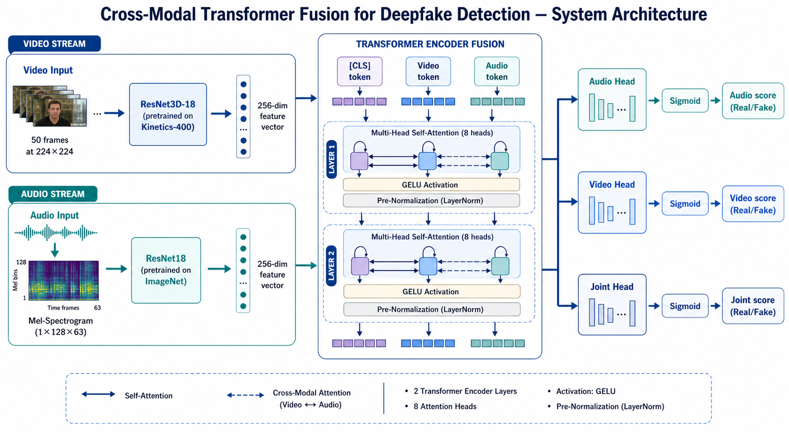
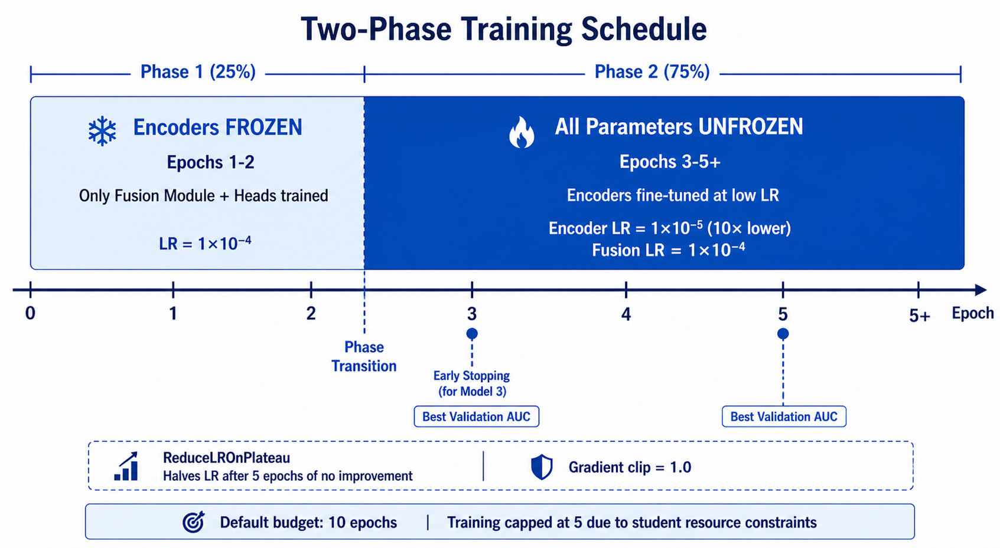
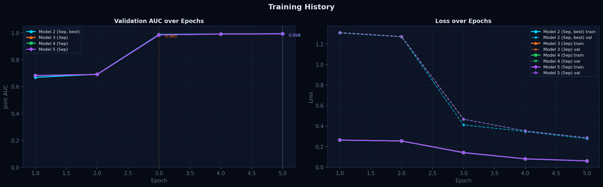
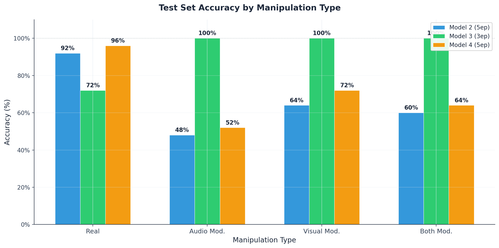
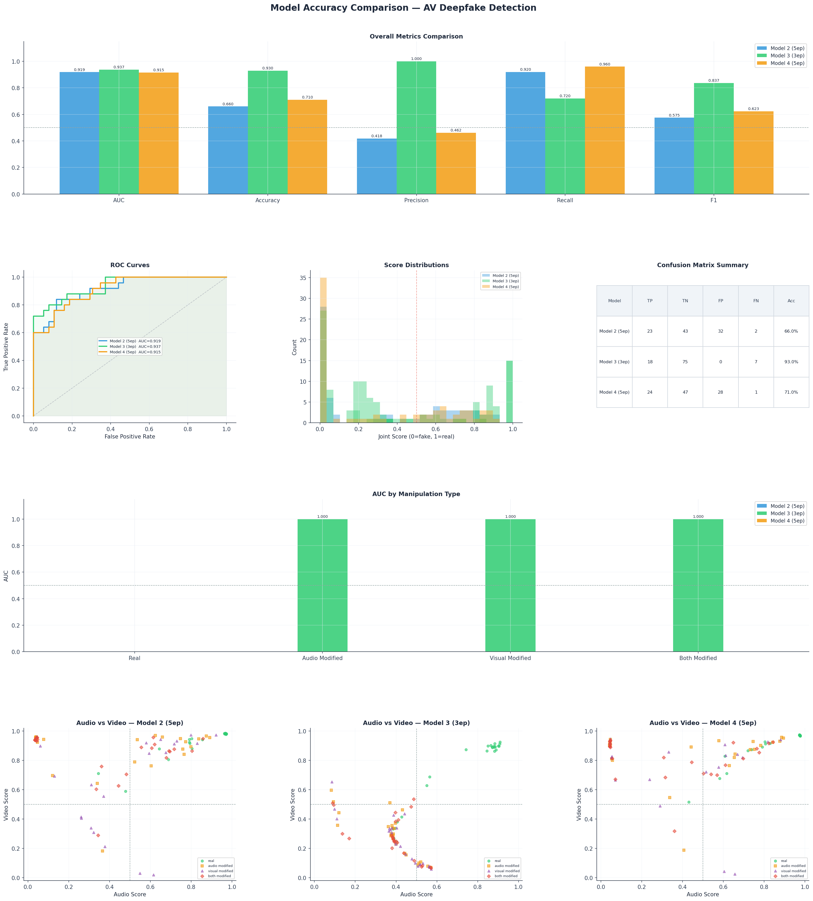
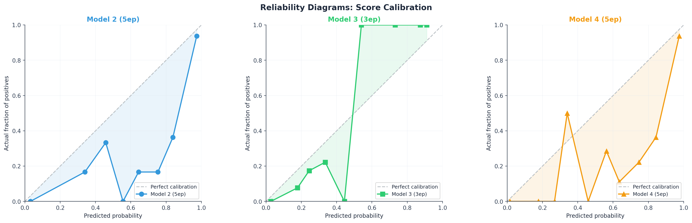
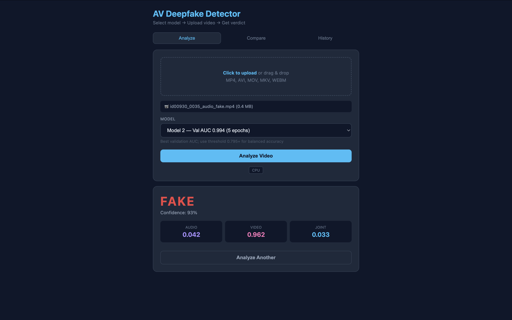
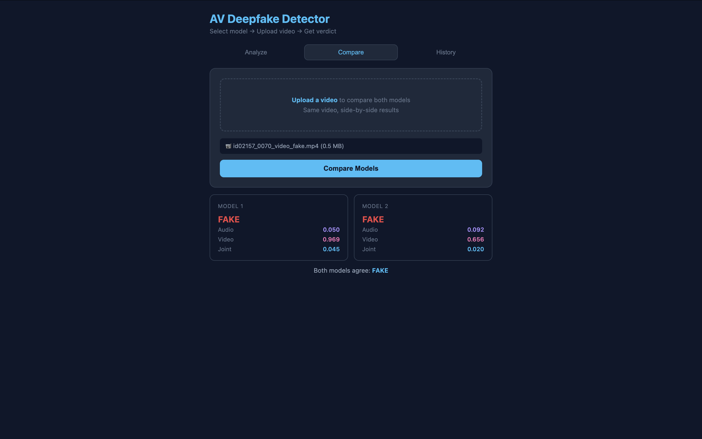
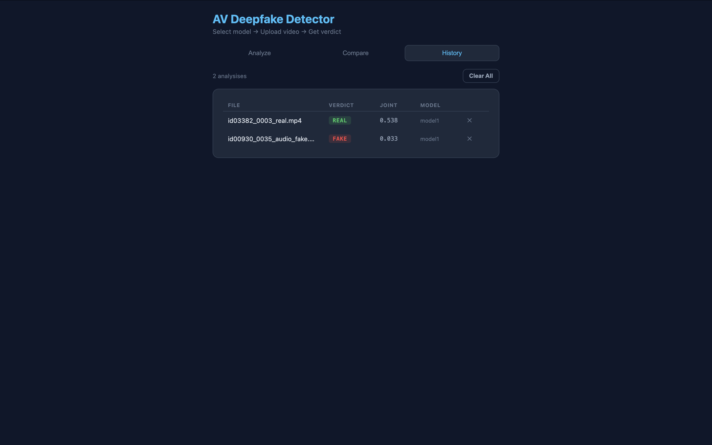

Viva: Deepfake Detection Using Cross-Model Transformer Fusion
Jasmi Preethi Alasapuri
2571395
Supervisor: Lucian Duta
BSc (Hons) Data Science and Artificial Intelligence | CN6000 Dissertation 2026
The Problem — Why Deepfake Detection Matters
AI-generated synthetic media is eroding trust in digital evidence across law, politics, finance, and journalism.
Real-world incidents:
• £20M corporate fraud via deepfake video call (Arup, 2024)
• Political deepfakes for disinformation (Zelenskyy, 2022)
• AI kidnapping and impersonation scams (FBI, 2025)
Multimodal deepfakes — manipulating both audio and video — are the hardest to detect.
Current systems are vision-centric and fail to capture speech-lip temporal relationships.
Computing challenge: Process 1.4 TB video data · Train 50M-parameter network · Real-time inference
Project Aims & Objectives
Aim: A multimodal deepfake detection system to distinguish real from manipulated audio-visual media using deep learning.
Six Objectives:
1. Literature review on deepfake generation and detection techniques
2. Analyse real-world impacts; identify gaps in current solutions
3. Quantitative secondary analysis of AV-Deepfake1M++ (speaker-disjoint split)
4. Design and implement Cross-Modal Transformer Fusion architecture
5. Resumable training pipeline; evaluation on held-out test set
6. Standalone inference system and web interface for non-technical use
Literature Review — Key Findings
| Phase | Era | Characteristics |
|---|---|---|
| Visual Fidelity | 2017–2019 | Face-swaps via Autoencoders / GANs |
| In-the-Wild | 2019–2021 | Multi-subject, uncontrolled environments |
| Multimodal | 2023–2025 | Neural generation: audio + video |
Three Gaps Identified:
1. Identity Leakage — Random splits allow face recognition, not manipulation detection
2. Vision-Centric Bias — Audio is handled via simple concatenation or ignored entirely
3. Limited Generalisation — Detectors overfit to training generators and datasets
Cross-Modal Transformer Fusion — Architecture

Key Design Decisions
| Component | Initial Plan | Final Choice | Reason |
|---|---|---|---|
| Audio Encoder | Wav2Vec 2.0 | ResNet18 + Mel-spec | torchaudio/FFmpeg handles corrupted MP4s |
| Video Encoder | MobileNetV3 | ResNet3D-18 | 3D convolutions for temporal lip-motion artefacts |
| Fusion Module | DiMoDif | Transformer + [CLS] | Cross-modal self-attention captures inconsistencies |
| Loss Function | BCE | Focal Loss (γ=2.0) | Down-weights easy examples; focuses on hard cases |
Implementation — Training Pipeline

| Setting | Value |
|---|---|
| Dataset | 68,851 clips (val split); 4 manipulation types |
| Phase 1 | Frozen encoders (~2 epochs) |
| Phase 2 | Full fine-tune at 10× lower LR |
| Optimiser | AdamW (1e-4 fusion, 1e-5 encoders) |
| Batch Size | 8 per GPU (×2 DataParallel) |
| Loss | Focal Loss (γ=2.0, α=0.25) |
| Infrastructure | Vast.ai (2× RTX 3080); W&B tracking |
| Workers | 28 CPU parallel extraction, crash-resumable |
Results — Training History & Per-Type Accuracy


| Model | Ep | Val AUC | Test AUC | Test Acc | Notes |
|---|---|---|---|---|---|
| M1 | 1 | 0.663 | — | — | Underfit; corrupted download |
| M2 | 5 | 0.994 | 0.919 | 66% | Highest val AUC |
| M3 ★ | 3 | 0.985 | 0.937 | 93% | Best: Precision 1.000, 0 false positives |
| M4 | 5 | 0.993 | 0.915 | 71% | Same session as M3, epoch 5 |
Model Comparison & Score Calibration


Key Finding:
Higher validation AUC does NOT equal better deployment performance.
• Model 2 (AUC 0.994) → 66% accuracy at τ=0.5 (poorly calibrated near boundary)
• Model 3 (AUC 0.985) → 93% accuracy at τ=0.5 (well-separated, zero false positives)
Calibration curves confirm Model 3 has near-perfect score-probability alignment. Audio-modified hardest type (88%) — genuine video signal counteracts audio head.
Key Findings
1. Phase 2 fine-tuning is essential
Phase 1 only (Model 1): AUC 0.663. Phase-2 models: ≥ 0.915 test AUC.
2. Validation AUC ≠ deployment performance
Model 2 (AUC 0.994) → 66%. Model 3 (AUC 0.985) → 93%. Score calibration matters.
3. Three-head architecture provides genuine modality specialisation
Audio/video scores dissociate by manipulation type as predicted. Per-modality interpretability.
4. Speaker-disjoint evaluation is critical
GroupShuffleSplit ensures zero speaker overlap. Results reflect manipulation detection, not identity.
Web Interface — Three Tabs

Analyze — Upload + Verdict

Compare — Side-by-Side Models

History — SQLite-Backed Log
Flask backend + inference.py CLI. Drag-and-drop, model selector, per-head scores (audio/video/joint), batch processing, PDF reports.
Limitations
| Limitation | Impact |
|---|---|
| 100-video test set | 1 misclassification = 1% accuracy shift; wide confidence intervals |
| Validation split only | 68,851 clips vs 1M+ in full training set; limited diversity |
| No ablation study | Cannot attribute performance to Focal Loss vs BCE, Transformer vs MLP |
| Fixed 2-second window | May miss manipulation in short or late segments |
| Single dataset | No cross-dataset evaluation (FakeAVCeleb, DFDC, FaceForensics++) |
| 5-epoch training cap | Cloud GPU budget prevented full convergence and hyperparameter sweeps |
Future Work
1. Ablation studies — Isolate Focal Loss vs BCE, Transformer vs MLP, full-frame vs lip-region
2. Cross-dataset evaluation — Test on FakeAVCeleb, DFDC, FaceForensics++ for generalisation
3. Full dataset training — Complete AV-Deepfake1M++ (1M+ clips) instead of validation split
4. Temporal localisation — Frame-level predictions via fake_segments annotations
5. Threshold optimisation — Calibrate on held-out set to balance FP/FN for deployment
6. Longer training runs — 20+ epochs with hyperparameter sweeps (institutional GPU)
Conclusion
What Was Achieved:
• Multimodal deepfake detector: 93% accuracy, precision 1.000, zero false positives
• Six objectives met — scope exceeds initial CN6000 proposal
• Speaker-disjoint evaluation for honest generalisation estimates
• Interpretable three-head output revealing per-modality vulnerability patterns
• Production-ready: Resumable pipeline, W&B audit trail, web UI, standalone CLI
Key Takeaway:
Score calibration, not AUC, determines deployment readiness. Model 3 (epoch 3, lower AUC) outperformed Model 2 (epoch 5) by 27pp — with zero false positives.
Hardest challenges were engineering: corrupted MP4s, crash-resumable extraction, cloud GPU management.